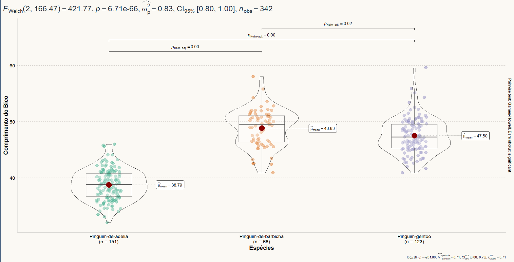
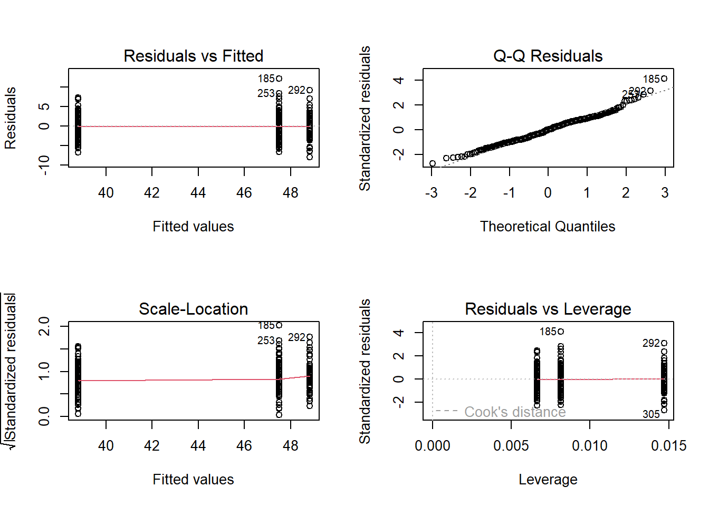
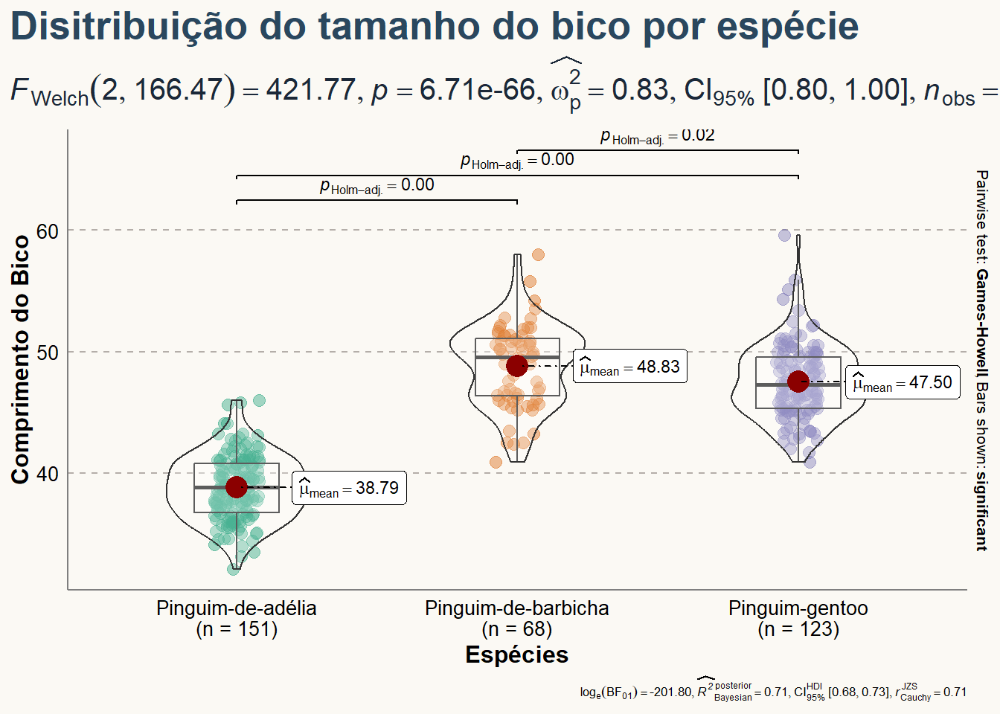

Esse documento foi desenvolvido para organizar meus estudos em Análise de Variância - ANOVA.
Author
Wellington Santos Souza
Published
Saturday, 28 December 2024
Análise de Variância - ANOVA

Se vamos realizar uma análise de variância, precisamos de uma variável numérica no eixo \(y\) (nossa variável resposta) e uma variável categórica com mais de dois tratamentos no eixo \(x\) (nossa variável explicativa).
A ideia é simples: queremos testar duas hipóteses:
\(H_0\): As médias dos tratamentos são iguais.
\(H_1\): Há diferenças entre as médias dos tratamentos.
Para decidir, usamos um nível de significância (\(\alpha\)) de 0,05. Isso significa que rejeitamos \(H_0\) se o valor-p for menor que 0,05.
Vamos praticar
A ANOVA é uma técnica poderosa quando queremos comparar mais de dois grupos e entender se algo realmente está diferente entre eles. Por exemplo, podemos usá-la para verificar se diferentes espécies de pinguins possuem características físicas distintas, como o comprimento do bico.
Para isso, usaremos a base de dados pinguins do pacote dados. Caso ainda não tenha esse pacote instalado, aqui vai o código para instalar e carregar tudo o que precisamos:
Nosso próximo passo é criar um modelo para testar os pressupostos da análise de variância. Vamos usar a função aov:
Code
mod_01 <-aov(comprimento_bico ~ especie, data = pinguins)
Testando pressupostos
Agora, vamos verificar se os pressupostos são atendidos. Para isso, criamos alguns gráficos:
Code
par(mfrow =c(2,2))plot(mod_01)

Linearidade
O gráfico Residuals vs Fitted mostra que a linha pontilhada vermelha está bem reta, indicando que o pressuposto foi atendido.
Normalidade
No gráfico Q-Q Residuals, os pontos estão bem alinhados na linha pontilhada, confirmando que os resíduos seguem uma distribuição normal.
Homogeneidade
No gráfico Scale-Location, a linha vermelha se mantém reta, mostrando que os dados têm variância homogênea.
Alavancagem
O gráfico de alavancagem apresenta poucos pontos influentes, e eles não estão muito distantes dos demais.
Os pressupostos da ANOVA são como os pilares de uma casa. Se não forem atendidos, nossos resultados podem ser enganosos ou frágeis. Com todos os pressupostos atendidos, podemos prosseguir com a análise de variância.
Interpretando os resultados
Queremos descobrir se o comprimento do bico varia entre as espécies. Para isso, analisamos o resultado da ANOVA:
Code
anova(test = F, mod_01) |>kable()
Df
Sum Sq
Mean Sq
F value
Pr(>F)
especie
2
7194.317
3597.158720
410.6003
0
Residuals
339
2969.888
8.760732
NA
NA
E, com o pacote report, obtemos uma descrição mais completa:
Code
mod_01 |>report()
The ANOVA (formula: comprimento_bico ~ especie) suggests that:
- The main effect of especie is statistically significant and large (F(2, 339)
= 410.60, p < .001; Eta2 = 0.71, 95% CI [0.67, 1.00])
Effect sizes were labelled following Field's (2013) recommendations.
A análise mostrou que a espécie tem um impacto significativo no comprimento do bico. O teste F indicou \(F(2, 339) = 410,60\) com um valor-p menor que 0,001, o que significa que as diferenças entre as médias são muito improváveis de ocorrer por acaso.
Além disso, o tamanho do efeito (\(Eta^2 = 0,71\)) revela que 71% da variação no comprimento do bico pode ser explicada pelas diferenças entre as espécies, um efeito considerado muito grande segundo os critérios de Field (2013).
O intervalo de confiança de 95% para \(Eta^2 [0,67, 1,00]\) reforça a confiabilidade desses resultados. Em resumo, há diferenças substanciais e estatisticamente relevantes no comprimento do bico entre as espécies de pinguins analisadas.
Para visualizar melhor, criamos um boxplot:
Code
ggbetweenstats(data = pinguins,x = especie,y = comprimento_bico) +labs(x ="Espécies",y ="Comprimento do Bico",title ="Disitribuição do tamanho do bico por espécie" ) +theme(text =element_text(size =8, color ="black"),plot.title =element_text( size =20,face ="bold",color ="#2a475e" ),plot.subtitle =element_text( size =15, face ="bold",color="#1b2838" ),plot.title.position ="plot", axis.text =element_text(size =10, color ="black"),axis.title =element_text(size =12) )+theme(axis.ticks =element_blank(),axis.line =element_line(colour ="grey50"),panel.grid =element_line(color ="#b4aea9"),panel.grid.minor =element_blank(),panel.grid.major.x =element_blank(),panel.grid.major.y =element_line(linetype ="dashed"),panel.background =element_rect(fill ="#fbf9f4", color ="#fbf9f4"),plot.background =element_rect(fill ="#fbf9f4", color ="#fbf9f4") )

E agora?
Esses resultados mostram que a ANOVA pode ser aplicada em diversos contextos. Por exemplo:
Saúde: Comparar a eficácia de diferentes tratamentos médicos em pacientes.
Educação: Verificar se diferentes métodos de ensino influenciam o desempenho dos alunos.
Biologia: Investigar diferenças em características físicas ou comportamentais entre espécies.
Negócios: Avaliar o impacto de estratégias de marketing em diferentes grupos de consumidores.
---title: "ANOVA"subtitle: "Aplicação em R"description: "Esse documento foi desenvolvido para organizar meus estudos em Análise de Variância - ANOVA."author: "Wellington Santos Souza"date: "2024-12-28"format: html: code-fold: true code-copy: true code-tools: true css: styles.csscategories: ["Análise de Variância", "ANOVA"]open-graph: description: "ANOVA" image: ../images/09-anova/anova.pngtwitter-card: description: "Curva-Normal" image: ../images/09-anova/anova.png---# Análise de Variância - ANOVASe vamos realizar uma análise de variância, precisamos de uma variável numérica no eixo $y$ (nossa variável resposta) e uma variável categórica com mais de dois tratamentos no eixo $x$ (nossa variável explicativa).A ideia é simples: queremos testar duas hipóteses:- $H_0$: As médias dos tratamentos são iguais.- $H_1$: Há diferenças entre as médias dos tratamentos.Para decidir, usamos um nível de significância ($\alpha$) de 0,05. Isso significa que rejeitamos $H_0$ se o valor-p for menor que 0,05.## Vamos praticarA ANOVA é uma técnica poderosa quando queremos comparar mais de dois grupos e entender se algo realmente está diferente entre eles. Por exemplo, podemos usá-la para verificar se diferentes espécies de pinguins possuem características físicas distintas, como o comprimento do bico.Para isso, usaremos a base de dados `pinguins` do pacote `dados`. Caso ainda não tenha esse pacote instalado, aqui vai o código para instalar e carregar tudo o que precisamos:```{r}#| result: hide#| message: falseif(!require('dados')){install.packages("dados")}; library(dados)if(!require('kableExtra')){install.packages("kableExtra")}; library(kableExtra)if(!require('tidyverse')){install.packages("tidyverse")}; library(tidyverse)if(!require(report)){install.packages("report") }; library(report)if(!require(ggstatsplot)){install.packages("ggstatsplot")}; library(ggstatsplot)```Depois de carregar o pacote, basta acessar a base:```{r}pinguins <- pinguinshead(pinguins) |>kable()```Para entender melhor os dados, podemos verificar sua estrutura:```{r}str(pinguins)```E listar as variáveis disponíveis:```{r}names(pinguins)```Removendo NA´s da coluna comprimento do bico```{r}pinguins <-data.frame(pinguins)pinguins <- pinguins |>filter(!is.na(comprimento_bico))```Agora, que tal explorar um pouco os dados? Vamos criar um histograma para o comprimento do bico:```{r}hist(pinguins$comprimento_bico,prob = T,col ="lightblue")lines(density(x = pinguins$comprimento_bico, adjust =3),lwd =2,col ='red')```## Rodando anovaNosso próximo passo é criar um modelo para testar os pressupostos da análise de variância. Vamos usar a função aov:```{r}mod_01 <-aov(comprimento_bico ~ especie, data = pinguins)```## Testando pressupostosAgora, vamos verificar se os pressupostos são atendidos. Para isso, criamos alguns gráficos:```{r}par(mfrow =c(2,2))plot(mod_01)```#### LinearidadeO gráfico `Residuals vs Fitted` mostra que a linha pontilhada vermelha está bem reta, indicando que o pressuposto foi atendido. #### NormalidadeNo gráfico `Q-Q Residuals`, os pontos estão bem alinhados na linha pontilhada, confirmando que os resíduos seguem uma distribuição normal.#### HomogeneidadeNo gráfico `Scale-Location`, a linha vermelha se mantém reta, mostrando que os dados têm variância homogênea.#### AlavancagemO gráfico de alavancagem apresenta poucos pontos influentes, e eles não estão muito distantes dos demais.Os pressupostos da ANOVA são como os pilares de uma casa. Se não forem atendidos, nossos resultados podem ser enganosos ou frágeis. Com todos os pressupostos atendidos, podemos prosseguir com a análise de variância. ## Interpretando os resultadosQueremos descobrir se o comprimento do bico varia entre as espécies. Para isso, analisamos o resultado da ANOVA:```{r}anova(test = F, mod_01) |>kable()```E, com o pacote `report`, obtemos uma descrição mais completa:```{r}mod_01 |>report()```A análise mostrou que a espécie tem um impacto significativo no comprimento do bico. O teste F indicou $F(2, 339) = 410,60$ com um valor-p menor que 0,001, o que significa que as diferenças entre as médias são muito improváveis de ocorrer por acaso.Além disso, o tamanho do efeito ($Eta^2 = 0,71$) revela que 71% da variação no comprimento do bico pode ser explicada pelas diferenças entre as espécies, um efeito considerado muito grande segundo os critérios de Field (2013).O intervalo de confiança de 95% para $Eta^2 [0,67, 1,00]$ reforça a confiabilidade desses resultados. Em resumo, há diferenças substanciais e estatisticamente relevantes no comprimento do bico entre as espécies de pinguins analisadas.Para visualizar melhor, criamos um boxplot:```{r}ggbetweenstats(data = pinguins,x = especie,y = comprimento_bico) +labs(x ="Espécies",y ="Comprimento do Bico",title ="Disitribuição do tamanho do bico por espécie" ) +theme(text =element_text(size =8, color ="black"),plot.title =element_text( size =20,face ="bold",color ="#2a475e" ),plot.subtitle =element_text( size =15, face ="bold",color="#1b2838" ),plot.title.position ="plot", axis.text =element_text(size =10, color ="black"),axis.title =element_text(size =12) )+theme(axis.ticks =element_blank(),axis.line =element_line(colour ="grey50"),panel.grid =element_line(color ="#b4aea9"),panel.grid.minor =element_blank(),panel.grid.major.x =element_blank(),panel.grid.major.y =element_line(linetype ="dashed"),panel.background =element_rect(fill ="#fbf9f4", color ="#fbf9f4"),plot.background =element_rect(fill ="#fbf9f4", color ="#fbf9f4") )```## E agora?Esses resultados mostram que a ANOVA pode ser aplicada em diversos contextos. Por exemplo:- **Saúde:** Comparar a eficácia de diferentes tratamentos médicos em pacientes.- **Educação:** Verificar se diferentes métodos de ensino influenciam o desempenho dos alunos.- **Biologia:** Investigar diferenças em características físicas ou comportamentais entre espécies.- **Negócios:** Avaliar o impacto de estratégias de marketing em diferentes grupos de consumidores.